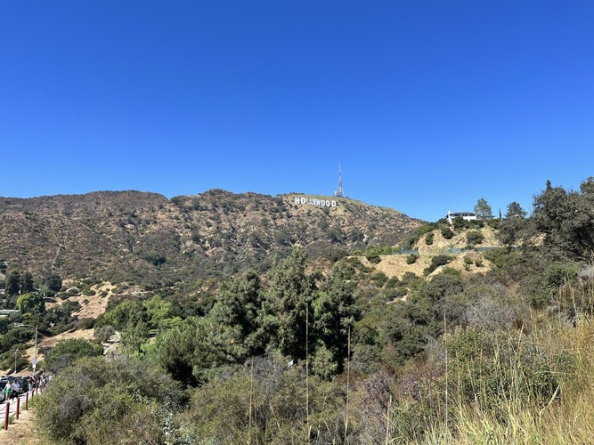
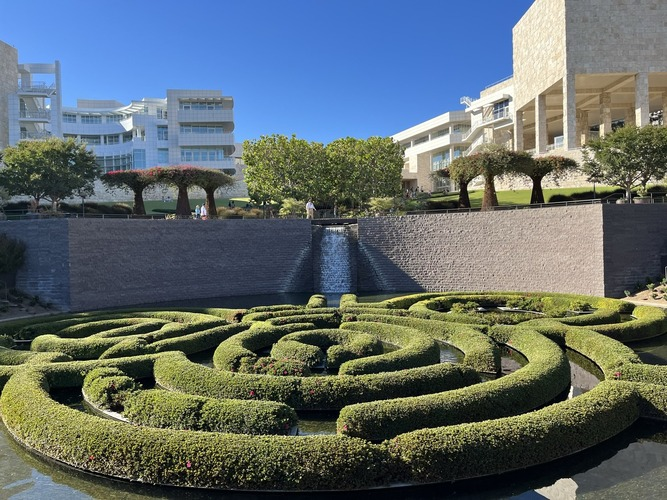
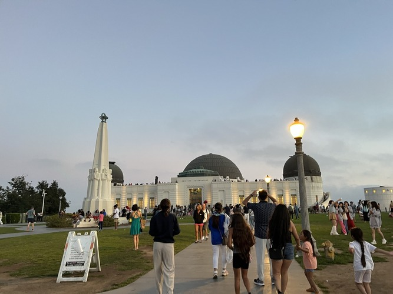

Santa Monica
The landscape and mood was really nice. Also watching the sunset at beach was unforgettable. The food was really good.

The favorite place that I visited when I went to LA trip.
The landscape and mood was really nice. Also watching the sunset at beach was unforgettable. The food was really good.
It was really cool to see hollywood sign for real. I take a lot of pictures there.
There was lot of famous art in the Getty. The garden was so nice.
The nightscape was really nice. I watched the planetarium and it was really nice experience.
I played at the theme park for a whole day and take a lot of ride! My favorite is harrypotter ride.